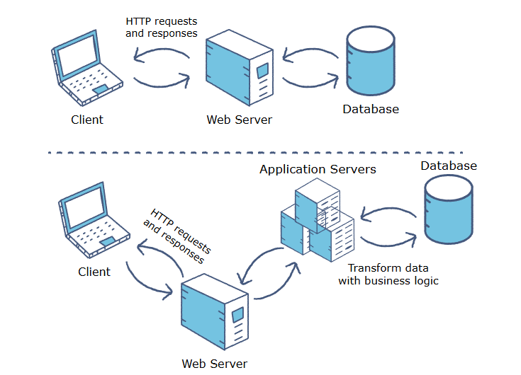
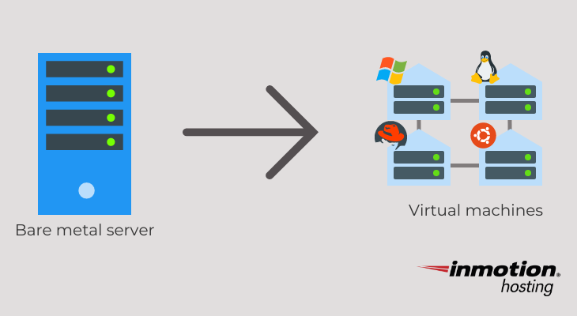
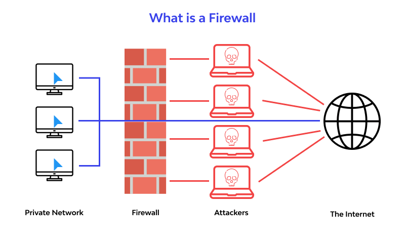
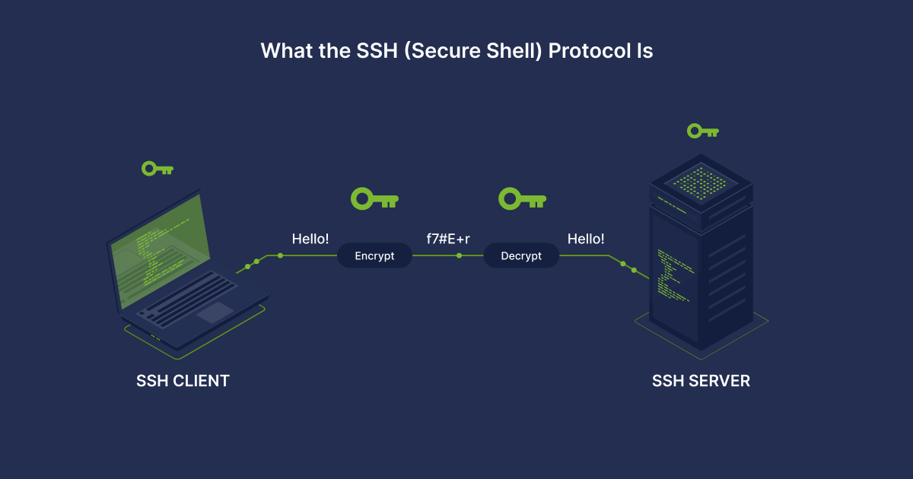
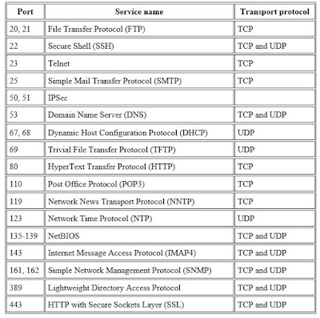
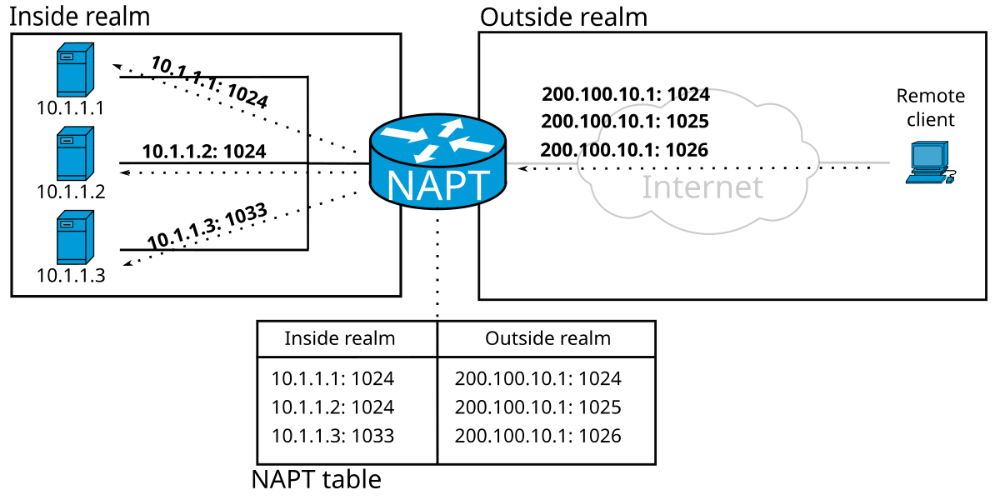
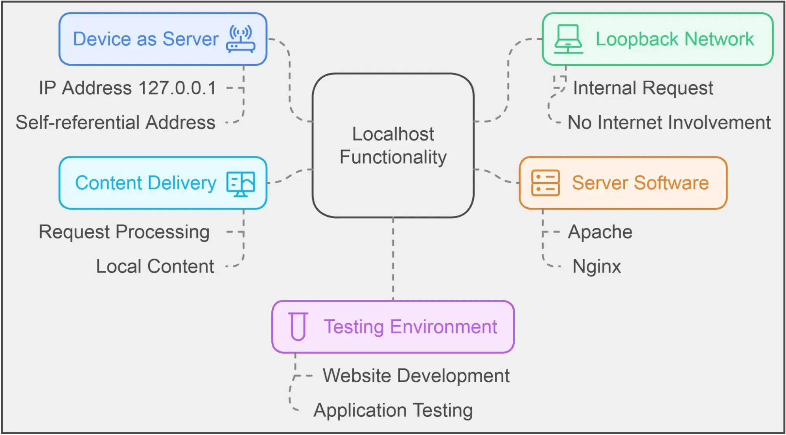
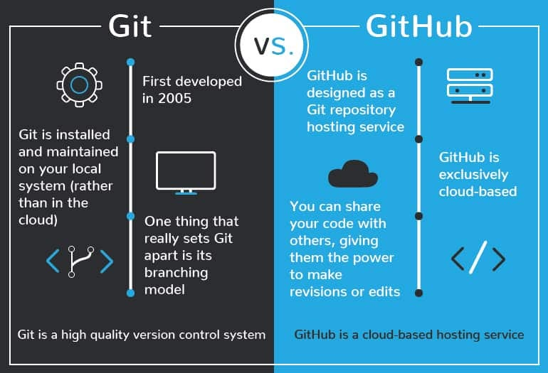

Some different web server applications:
| Web server application | Description | OS / Platforms | Notes / Latest |
|---|---|---|---|
| Apache HTTP Server | Classic, open-source HTTP server. Highly modular: supports static pages, dynamic content (via scripting languages), virtual hosts, SSL/TLS, and more | Cross-platform: Unix-like (Linux, macOS, *BSD, etc.), Windows, OpenVMS | Project site: official Apache site — download from there. Latest stable release (as of 2025) is 2.4.65 |
| NGINX | (Often used as an alternative to Apache.) It’s designed to efficiently serve static files and to handle many concurrent connections — often preferred for high-traffic. | Cross-platform / Unix-like (Linux, BSD, etc.), and builds available for Windows. | Open-source. Widely used, especially for performance-oriented or high-concurrency environments. |
| LiteSpeed Web Server (LSWS) | Proprietary (but also with an open-source variant), aiming to be an efficient, drop-in replacement for Apache. Supports Apache-compatible configurations (e.g. .htaccess, mod_rewrite), but uses an event-driven architecture for better performance under heavy load. | Linux-style systems (CloudLinux, AlmaLinux/CentOS/RedHat/Fedora, Debian/Ubuntu, FreeBSD) | Latest official release version as of latest public info: 5.4.12. |
These are by no means all web servers — there are many others (including stacks combining web server + application server + database, frameworks, etc.). The best choice depends on your needs (static vs dynamic content, performance, OS, resources, scale, ease of configuration, etc
Virtualization is a technology (and a concept) whereby a physical computer’s hardware (CPU, memory, storage, network, etc.) is abstracted so that multiple “virtual computers” — Virtual Machines (VMs) — can run on a single physical host. Each VM can run its own operating system, independent of the host, and behave like a “real” separate computer.
It supports networking for VMs (virtual network adapters), various networking modes (NAT, bridged, etc.), and lets guest VMs access the outside world (Internet) via the host’s physical network.

A virtual machine is the “virtual computer” created by virtualization software (like VirtualBox). A VM has virtual hardware — virtual CPU, memory, storage, network — and inside it you can install an operating system (just like on a real computer). The VM runs independently (to a large extent) from other VMs and from the host machine.

The host machine is the real physical computer on which the virtualization software (like VirtualBox) runs.
The guest machine (or guest VM) is the virtual machine created by that virtualization software, running inside the host. It behaves like a separate computer (with its own OS, software, network, etc.), but in reality, it's sharing hardware with the host (and potentially other VMs).
In short: host = “real computer,” guest = “virtual computer inside it.

Debian is a free and open-source Linux distribution (i.e. an operating system) used widely on servers and desktops. It’s known for stability, robustness, and extensive package support. (You didn’t ask for download details, but Debian is available from its official website, typically as an ISO image you install on hardware or in a VM.)
A firewall is a system (software or hardware) that controls incoming and outgoing network traffic based on predetermined security rules. Its job is to block or allow traffic based on IP addresses, ports, protocols, etc., helping protect machines (servers or clients) and networks from unauthorized access, attacks, or other unwanted network behavior.

SSH is a protocol and associated software that allows secure (encrypted) remote login and remote command execution over a network. Using SSH, you can connect from one computer to another over the Internet (or LAN), log in to a terminal on the remote machine, run commands, transfer files securely, etc. It is widely used for administering servers remotely.

An IP address is a numerical label assigned to each device connected to a computer network that uses the Internet Protocol for communication. It uniquely identifies a device on the network (within a network or globally) — analogous to a “street address” but for computers. It allows devices to send and receive data across networks.

A network mask (subnet mask) is used in IP networking to divide an IP address into a network part and a host part. It defines which portion of the IP address refers to the network and which portion refers to individual hosts (devices) on that network. This is essential for routing — determining whether a destination IP is on the local network or requires going through a router/gateway.

In networking, a port is a numeric identifier (often from 0 to 65535) used by the Transport Layer (e.g. TCP or UDP) to distinguish different services or applications on the same machine. For example:
When data arrives at a computer, the port number tells the OS which application should receive that data.

Port forwarding is a technique (or configuration) where you tell a network gateway (like a router, or virtualization software’s NAT engine) to forward traffic arriving at a given port on the gateway/host to a port on a particular internal (private) IP address or virtual machine.
In virtualization (e.g. with VirtualBox), port forwarding lets you run a server inside a guest VM (on a private internal network) and still allow the host machine — or even external machines — to access it via a port on the host.

The term “localhost” refers to the logical network address that a machine uses to refer to itself. In other words — “localhost” points to the same computer you're currently using. It is typically mapped to the IP address 127.0.0.1 (for IPv4) — also known as the “loopback address.”
When you connect to localhost (e.g. http://127.0.0.1), you're communicating with services on your own computer, not over the external network.

127.0.0.1 is the standard IPv4 loopback address. It represents “this computer” — i.e. the local machine. Any network traffic sent to 127.0.0.1 stays within the device; it doesn’t go out to the external network. It is used for testing, development (e.g. running a web server locally), or communicating between processes on the same machine.
Git is a distributed version control system — a tool programmers use to keep track of changes to files (especially code), collaborate with others, manage different versions (branches), and maintain a full history of modifications. It enables multiple people to work on the same project simultaneously, merging changes, branching off experimental versions, and reverting changes if needed.
GitHub is a web-based hosting service for Git repositories. It provides a user interface and collaboration tools — for example: repositories (projects), issue tracking, pull requests (proposing changes), collaboration features (multiple contributors), version history, and many other facilities for open-source and private development.
In short: Git is the version-control tool; GitHub is a platform/service that hosts Git repositories and helps people collaborate around them.
